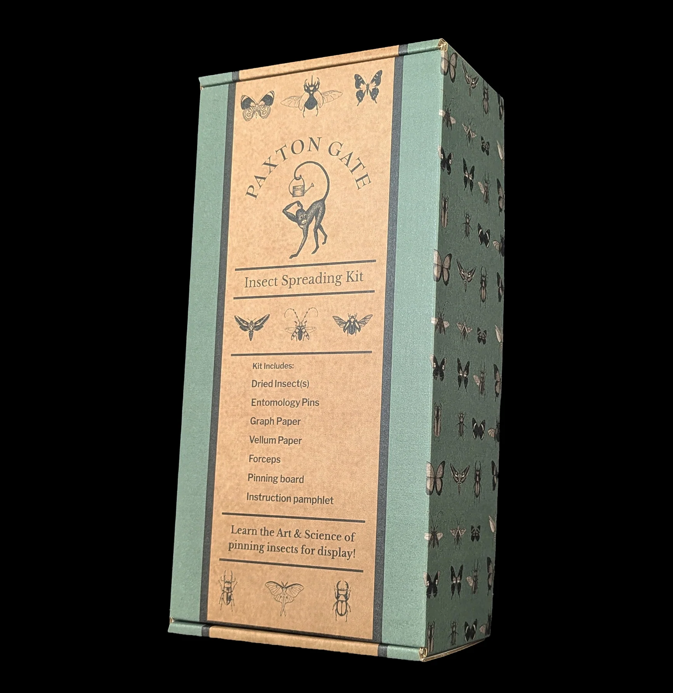
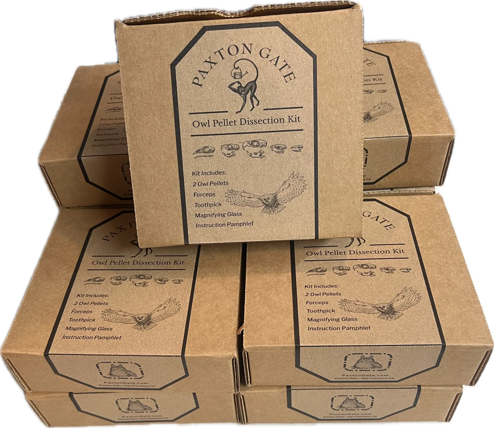
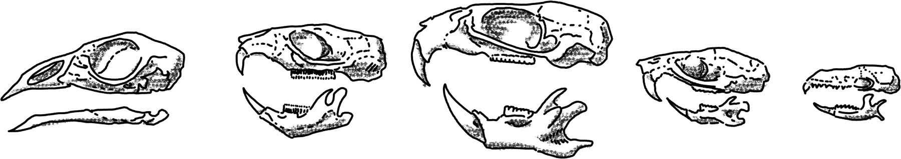

Chapter I · Product Design
The Insect Spreading Kit
Paxton Gate’s insect-spreading class, packed into a box so people could learn it at home.
I designed the kit, worked out its costs, illustrated the packaging, and built the first version. Then I watched how people actually interacted with it on the shelf and redesigned it around what I learned.
- Product reasoning
- Packaging
- Cost

Product reasoning
The first version used a clear acrylic box. It showed the tools beautifully and made the contents easy to see, but it was expensive and scratched easily with normal handling.
The packaging was doing its job visually, but it was making the product harder to produce, ship, and sell.
So I looked for a way to keep the visual impact without spending the budget on the container.
A clear acrylic box
The tools were part of the display.
Printed packaging, and more to learn
Custom printed packaging at about half the cost, easier to handle, and sturdier on the shelf.
The savings made room for two specimens in each kit: a butterfly and a beetle. That gave students the opportunity to practice both spreading techniques instead of getting only one chance to learn.
The packaging
Every insect in the pattern is my illustration. The box is designed as a flexible pattern rather than a portrait of a particular species, so the specimens inside can change with availability without requiring a new package.
The flaps carry a little personality too:
“Caution: contents may bug your friends.”
A second application
The same approach carried into the Owl Pellet Dissection Kit.
I illustrated the skulls a student might actually find inside the pellets and used those drawings on the package and instruction materials. The illustrations give students an idea of what they might discover before opening the kit, while giving the product its own visual character.
The result is another small learning experience designed to work as a physical product.

